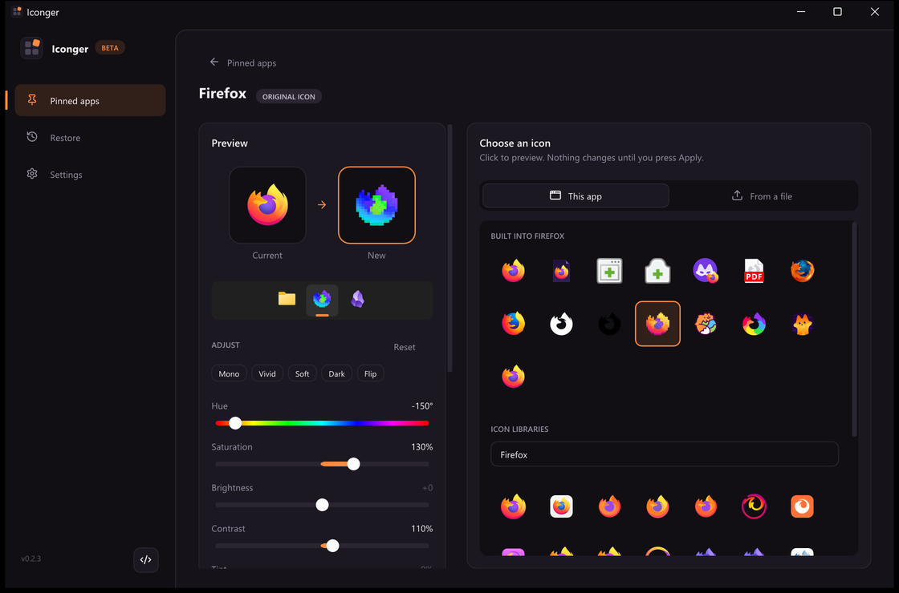

Adjust any icon
Hue, saturation, brightness, contrast and tint, or a one-click look. Even for the icon an app already has.
About 20,000 ready-made icons, or your own, for any app pinned to your taskbar. Free for Windows 10 and 11.

Iconger lists everything pinned to your taskbar, with the icon each one has now.
Matches from seven icon libraries, the app's own spare icons, or any file you have.
The taskbar shows it right away. The original is backed up first, so you can always go back.
Features
Hue, saturation, brightness, contrast and tint, or a one-click look. Even for the icon an app already has.
Put a logo on a square or round tile in any colour, or drop the tile and colour the logo.
Before the first change, exactly as it was. Restore one app or all of them from the Restore page.
Many apps ship spare icons (Firefox has about 15). Or drop in any file you like.
Export every custom icon to one file. Import it on another PC.
Asks before installing a new version, checks the download, and shows what's new.
Give a new icon to apps that only show on the taskbar while they run. Off until you turn it on in Settings.
Everything pinned to your taskbar, with the icon each app has now.
Icon libraries
Iconger searches seven free icon libraries by the app's name. Only the icons you look at are downloaded.
Icons are made by the authors of each library and downloaded from them on demand, never bundled with Iconger. App logos are trademarks of their owners.
%LOCALAPPDATA%\Iconger.Couldn't load the release notes from GitHub right now. See every release on GitHub.
All releases on GitHubFAQ
Yes. It's free and open source under the MIT license, with no ads, accounts or paid version.
No. It changes the icon of the app's taskbar shortcut, the same setting you'd find under the shortcut's Properties. The app's files stay exactly as they were.
Open the Restore page and restore one app, or all of them at once. Iconger backs up every original before its first change.
Yes, with one extra step. A Store app's icon is locked inside its package, so Iconger makes a shortcut with your icon that opens the same app, then walks you through swapping the pin. Windows 11 doesn't let programs pin to the taskbar themselves.
Usually. Every icon you apply is kept as its own copy, so it still works when an update moves or replaces the app. A few updaters rewrite their taskbar shortcut, which resets the icon. Then pick your icon again, it's still in Iconger.
Not by default. Only the experimental option for apps that aren't pinned keeps Iconger running, because it has to re-apply the icon each time those apps open. You'll see it in Task Manager, with no tray icon.
Windows sometimes holds on to an old icon. In Settings, restart Explorer in one click (open folders come back) and clear the icon cache if needed.
Restore your icons if you want the originals back, then delete iconger.exe and the folder %LOCALAPPDATA%\Iconger. If you turned on start with Windows, turn it off in Settings first.